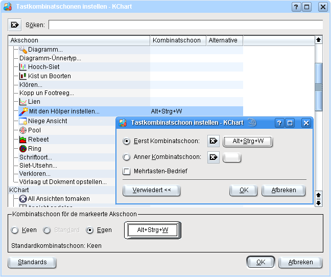
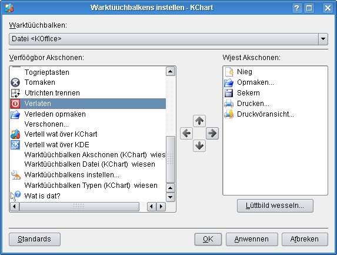
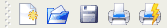

Stellt en nieg Dokment op
Maakt en Dokment op
Wiest en List vun tolest opmaakt Dokmenten
Sekert dat Diagramm na de aktuelle Datei. Wenn dat Diagramm noch nich sekert wöör, warrt en Dialoog wiest.
Sekert dat Dokment. De Dateidialoog warrt bruukt.
Laadt dat Dokment nieg
Maakt en ünnerstütt Dokment op. Dat Orginaaldokment warrt nich ännert.
Sekert en Dokment na jichtenseen ünnerstütt Formaat. Dat Orginaaldokment warrt nich ännert. Du kannst ok Bildformaten utsöken, a.B. PNG, SVG, Krita, Gimp oder JPG.
Stüert dat Diagramm as Nettbreefbilaag loos.
Importeert Weerten ut en CSV-Datei (mit Kommas trennte Weerten), liek as de CSV-Import in KSpread. Beacht, dat sik ok anner Optschonen un verscheden Trenners fastleggen laat, un nich bloots Kommas.
Stellt ut dissen Dokment en KChart-Vörlaag op.
Druckt dat Dokment
Stell seker, dat in Aktuell bruukt Drucksysteem: dat richtige Drucksysteem utsöcht is. Disse Optschoon warrt na en Klick op den -Knoop wiest.
Wiest en Druckvöransicht vun dat Dokment.
Maakt en Dialoogfinster op, binnen dat sik Informatschonen över dat Diagramm ingeven laat.
De Dateikieker Konqueror wiest disse Dokmentinfomatschoon as Kortinformatschoon. De Kortinformatschonen sünd Opdukers, de Dateiinholden wiest, wenn Du mit de Muus dat Dateilüttbild anröögst.
Maakt dat aktuelle Diagramm to.
Beendt KChart
Maakt den KChart-Instellendialoog op.
Regen un Striepen tuschen (X un Y tuschen)
Ännert de Anornen vun Balkendiagrammen.
Giff hier de Titels för Dien Diagramm in.
Hier kannst Du Diagrammklören utsöken, Lienen- un Gadderklören, un de Klören för Assentitel un Assenbeteken.
Hier kannst Du de Schriftoort un -grött utsöken. Hier laat sik ok de Regenklören fastleggen. De Regen höört de Enkeltekens to. Elk dorstellt Datensett is en Reeg.
Söök en Klöör oder en Achtergrundbild as Achtergrund för Dien Diagramm ut.
Finster för't Ännern vun Titel, Schrift un de Utrichten vun de Verkloren. De Klöör vun dat Verklorenfinster lett sik ok ännern.
Legg hier de Siedenränners fast.
Verscheden Warktüüchbalkens wiesen/versteken (, un ).
Tastkombinatschonen för KChart instellen.
De KChart-Warktüüchbalkens instellen
Röppt KDE sien Hülpsysteem mit de KChart-Hülp op (dit Dokment).
Ännert den Muuswieser to een Tosamensetten ut Wieser un Fraagteken. En Klick op en Element binnen vun't KChart maakt en Hülpfinster op, dat de Funkschoon vun dat Element beschrieven deit (wenn dat dor en Hülptext för gifft).
Maakt den Dialoog för Fehlerberichten op, mit den Du Fehlers künnig maken un fehlen Funkschonen angeven kannst.
Maakt en Dialog op, mit den Du de Hööftspraak un de Opbackspraak för dit Programm instellen kannst.
Wiest Informatschonen över de Verschoon un den Schriever.
Wiest de Verschoon und anner allmeen Informatschonen över KDE an.
Mit -> laat sik Tastkombinatschonen fastleggen.
Nerrn en Bispill, wodennig sik en Tastkombinatschoon för't Opmaken vun dat Diagramm fastleggen lett.

Klick op .
Nu klick an.
Nu drück de Tasten Alt Strg W, un de Dialoog schull weggahn. De Tastkombinatschoon is nu ingeven.
De Tastkombinatschoon Alt Strg W röppt nu den Hölper op.
Mit de -> laat sik de Warktüüchbalkens noch mehr Knööp tofögen.

Wenn Du en Knoop na den Datei-Warktüüchbalken tofögen wullt,

stell seker, dat baven in't Utsöökfeld Datei <KOffice> wiest warrt.
Klick op een vun de Indrääg in't Paneel linkerhand. Disse Indrag warrt nu rutheevt, wat bedüüdt, dat de utsöcht wöör.
En Klick op den Piel rechts-Knoop föögt em na't Paneel rechterhand to.
Klick op Anwennen un denn op OK
De Warktüüchbalken schull nu den niegen Indrag bargen.


Wullt Du wat to disse Siet seggen oder ehr verbetern?
Denn stüer Dien Vörslääg to den KDE-Dokmentatschoonkoppel!